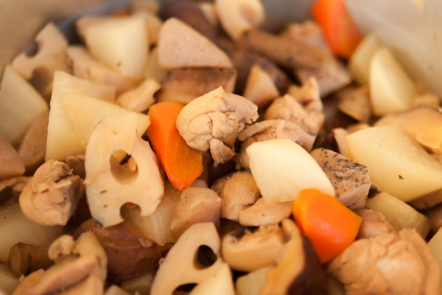

簡単筑前煮

材料 2人分
- 鶏もも肉
- 100g
- 干し椎茸
- 10g
- にんじん
- 60g
- ごぼう
- 50g
- れんこん
- 50g
- 大根
- 3cm
- 椎茸の戻し汁
- 100ml
- ⚫ みりん
- 大さじ2
- ⚫ 醤油
- 大さじ1
- ⚫ 酒
- 大さじ1
- ⚫ 砂糖
- 小さじ1
作り方
1
ごぼうは皮をこそげ落とし、乱切りにしておきます。
こんにゃくはアク抜きをしておきます。
里芋、にんじん、レンコンは皮をむいておきます。
2
干しシイタケは水で戻し、戻し汁を100ml取り分けます。
干しシイタケは軸を切り落とし、4等分にします。
3
レンコンは1cm幅のいちょう切りにします。
ボウルに水と酢を入れて混ぜ合わせ、レンコンとごぼうを入れ10分ほどおき、水気を切ります。
4
人参を乱切りにし、鶏もも肉はひと口大に切ります。
5
鍋にサラダ油をひき、5を入れ中火で炒めます。
6
表面の色が変わったら、1、2、3、4を加え中火で炒めます。
7
全体に油がなじんだらしいたけの戻し汁、⚫を加え中火で煮ます。
沸騰してきたら落とし蓋をし、中火で具材に火が通るまで15分加熱します。
8
具材に火が通ったら落とし蓋を外し、煮汁が1/3程度になるまで煮詰めたら火から下ろしたら完成です。